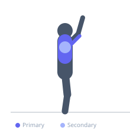

Exercise guide / Smith Machine Floor Press
Smith Machine Floor Press
The Smith Machine Floor Press combines the floor press's ROM restriction and triceps emphasis with the Smith machine's fixed bar path and self-spotting capability. The floor eliminates leg drive and limits the eccentric to 90 degrees of elbow flexion, making it an effective triceps and upper chest exercise for home gym setups where a traditional bench may not be available.
Primary muscles
triceps lateral head
triceps medial head
pectoralis major sternal
Secondary muscles
deltoid anterior
triceps long head
Stabilizers
pectoralis minor
Equipment
Smith Machine


Starting position
- Lower the Smith machine bar to a few inches above where your elbows touch the floor when lying beneath it. Lie on the floor under the bar and grip it at shoulder-width.
Setup
- Adjust Smith machine bar height carefully for the floor position. Place a mat on the floor for comfort. Have the safety catches set appropriately in case of failure.
Steps
- Step 1: Rotate bar off hooks and hold at arm's length above the chest.
- Step 2: Lower bar until upper arms touch the floor (elbows at approximately 90 degrees).
- Step 3: Pause on the floor for 1 second.
- Step 4: Press back to full lockout and repeat.
Coaching cues
- Let the floor stop you — don't relax tension when you touch
- Pause and press with intent
Breathing
- Inhale before descent. Exhale through lockout.
Range of motion
- Elbows touch the floor at the bottom; full extension at top. Shorter ROM than bench press.
Tempo
- 3-1-1-0
Common mistakes
- Not pausing on the floor, using momentum
- Setting the bar height too low, making unracking difficult
Safety
- The floor catches the bar if grip fails — this is a self-spotting exercise
- Set the bar height precisely before lying down
Training
- strength: 3–8 reps
- hypertrophy: 8–15 reps
- strength: 3–5 sets
- hypertrophy: 3–4 sets
- Rest: {'strength': 180, 'hypertrophy': 90}